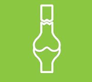
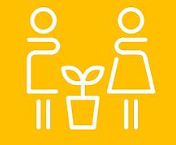
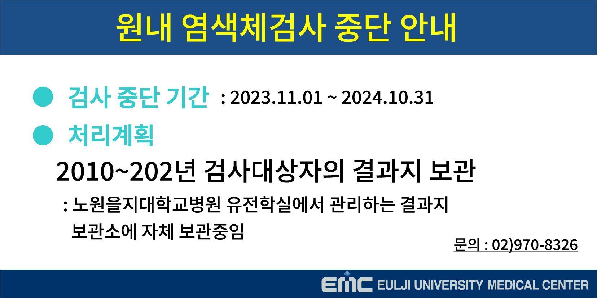
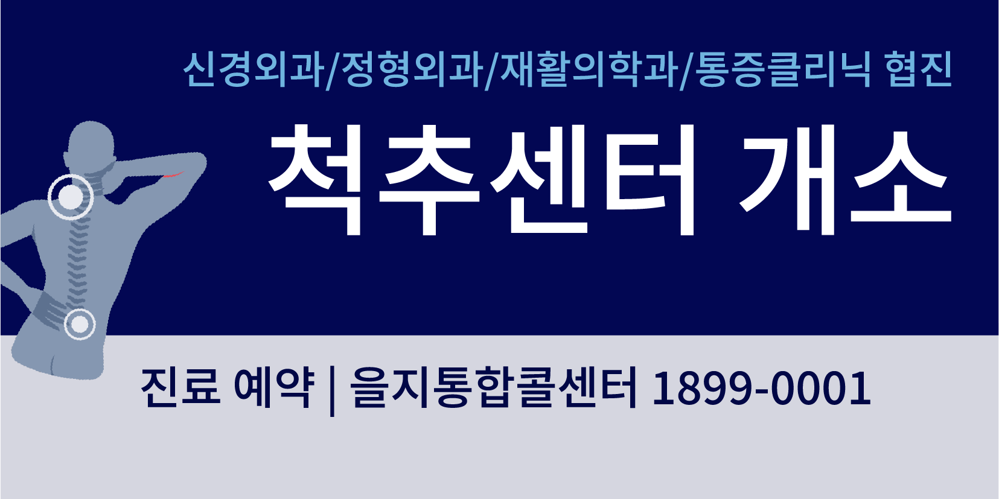
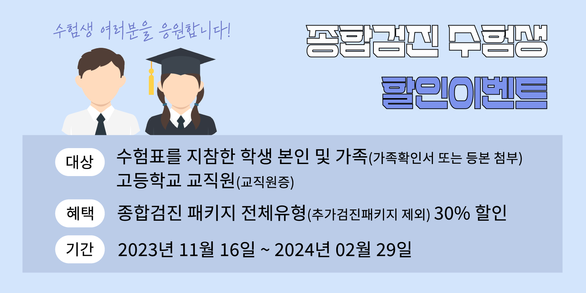
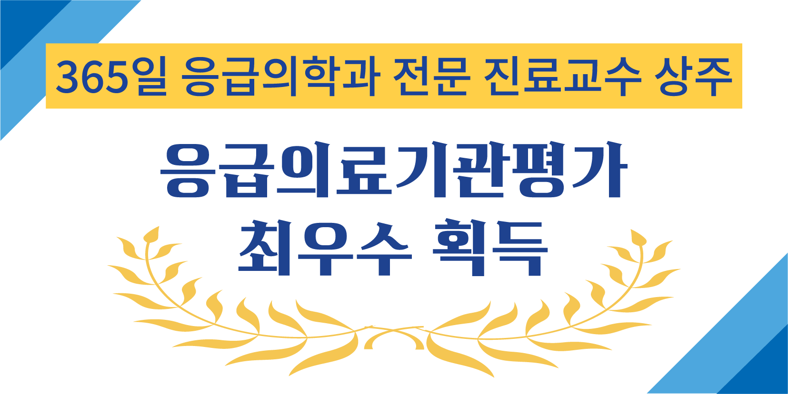
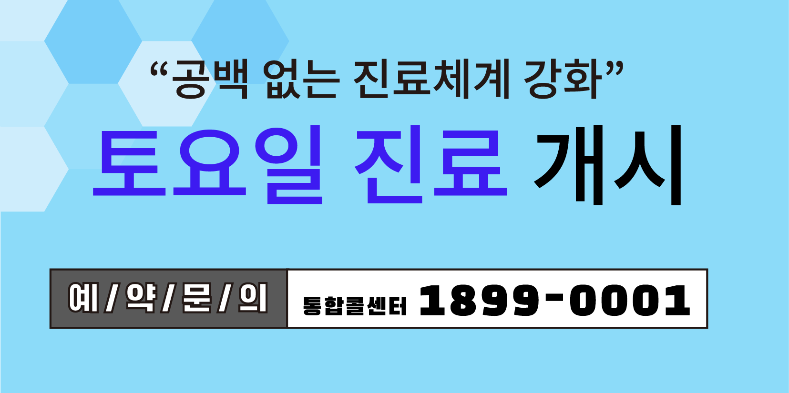

노원을지대학교병원 소식
노원을지대학교병원의 소식 및 정보를 알려드립니다.
- 2023-11-22 내과 윤재식 전공의 대한내과학회 74차 추계학술대회서 우수 포스터상 수상 노원을지대학교병원(원장 유탁근) 내과 윤재식 전공의(지도교수 : 안상봉 교수, 오주현 교수)가 지난달 28일 서울 스위스 그랜드 호텔에서 열린 대한내과학회 74차 추계학술대회에서 우수 포스터상을 수상했다.
- 2023-11-20 [유튜브 을지TV] 소아 근시를 늦추는 드림렌즈의 모든 것! 요즘 아이들은 스마트폰을 비롯한 전자기기 사용이 잦다보니, 소아청소년기 자녀가 있는 부모라면 아이들 눈건강에 대한 걱정이 될텐데요. 아이가 학교나 학원에서 칠판 또는 모니터가 잘 안보인다고 한다면! 근시를 의심해볼 수 있습니다. 이런 경우 드림렌즈를 통해 근시 진행을 늦추는 관리가 필요한데요.
- 2023-11-10 재활의학과 정창현 전공의, 대한재활의학회 추계국제학술대회 우수구연상 수상 노원을지대학교병원(병원장 유탁근) 재활의학과 정창현 전공의(지도교수:강윤주 교수)가 제51회 대한재활의학회 2023년 추계국제학술대회에서 우수구연상을 수상했다.
- 2023-11-08 [유튜브-을지 TV] 아이 키 멈추는 성조숙증 막으려면 언제 병원에 가야할까? 자녀를 둔 부모라면 ‘키 성장’은 최대 관심사 중 하나인데요. 키 성장과 성조숙증은 긴밀한 관계가 있다는 사실 알고 계셨나요? 성조숙증이 의심되는 사소한 증상을 무심코 지나친다면 아이의 최종 키가 작을 수 있습니다.
- 2023-11-08 [유튜브-톡투건강TV] 슬기로운 원장생활! 유탁근 노원을지대병원장 편 동아일보 이진한 의학전문기자와 콜라보로 진행된 [슬기로운 원장생활_소통의 신! 유탁근 노원을지대병원장 편] 콘텐츠 소식을 전해드립니다. 전립선암 명의이자 6년째 병원을 이끌고 있는 유탁근 원장의 슬기로운 원장생활 비결! [유튜브_톡투건강 이진한TV]를 통해 확인해보세요~
- 2023-11-06 인공신장실팀, 대한환자안전학회 학술대회 대상 노원을지대병원 대한환자안전학회 학술대회 대상 올 3월 서울시병원회 QI경진대회 은상 수상에 이은 쾌거
- [코로나19 건강수칙 안내]확진자 및 동거인 안내문 (격리안내) 확진 후 검체채취일로부터 7일까지는 타인에게 전염시킬 위험이 있어 집(생활치료센터, 전담병원)에서 격리
- MRI는 어떤 경우에 보험혜택을 받을 수 있나요? MRI의 일반원칙은 질환별 급여 대상 및 산정기준에 해당하지 않는 경우에는 요양급여가 되지 않습니다. 질환별 급여대상은 암, 뇌양성종양 및 뇌혈관질환, 간질이나 뇌염증성질환 및 치매, 척수손상 및 척수질환에 한해 보험이 됩니다. 급여대상이 된다고 하더라고, 산정횟수가 제한되어 있기에 자세한 사항은 심사과에 문의해주세요.
- CT, MRI, PET-CT 건강보험 적용시 본인부담률을 알려주세요. 외래, 입원 모두 50% 본인부담 단, 희귀질환은 10%, 암등중증 질환은 5% 본인 부담입니다
-
입원치료 시와 외래치료 시 본인의 부담률을 알려주세요.
외래진료비 : 본인부담 50%
입원진료비 : 본인부담 20% - 심사과에서는 어떤 업무를 하나요? 심사과는 병원에서 발생되는 모든 진료비에 대하여 심사(퇴원계산) 및 진료비청구를 하고 있습니다. 이는 건강보험 인정기준에 적합한 진료비 검토를 함으로써 환자들의 신뢰도 유지 및 원내 고객의 알권리를 충족시켜 드리고 있습니다.
- 노인장기요양보험 의사소견서 발급절차는 어떻게 되나요? 노인장기요양보험 급여를 받기 위해서는 먼저 건강보험공단에 장기요양인정신청서를 제출하여 장기요양급여자로 판정받아야 합니다. 건강보험공단에서 발급한 의뢰서와 의사소견서 양식을 지참하여 해당 진료과 접수 후 담당의사와 상담하여 의사소견서를 발급 받아 건강보험공단에 제출하시면 됩니다.
- 2023-12-14 (재공고)을지재단 및 산하기관 홈페이지 외주 운영 용역사업
- 2023-12-13 (재공고)대전을지대학교병원 재활치료실 치료도구 구입
- 2023-12-12 노원을지대학교병원 신경생리감시장치 1 Set 구매
- 2023-12-07 (재공고)을지재단 MRI 1 Set, CT 1 Set 구매 & MRI S/W Upgrade 4 Set
- 2023-12-07 (재공고)의정부/노원/강남을지대학교병원 의료폐기물 수집, 운반/중간처리
- 2023-12-07 (재공고)대전을지대학교병원 안과 Non-Contact Specular Microscope 1 Set 구매

건강정보
건강증진방법과 새로운소식을 보실 수 있습니다.
-
정형외과 Orthopedic Surgery 어깨 수술 후 회복운동 프로그램이 필요합니다. 수술 직후 보조기 착용, 수술 후 2주 실밥 제거 및 보조기 유지, 4주차 운동에는 보조기를 풀고 어깨 운동을 시작합니다. 6주차 운동부터는 4주차 운동에 더하여 도르래 운동 등을 해주어야 하며 3개월차 부터 고무 밴드를 활용한 운동을 같이 해줍니다. 수술 후 6개월부터 외래 방문하여 상태를 확인하고 정상의 80% 기능 회복을 기대할 수 있습니다. 수술 후 1, 2년에는 X-ray 및 초음파 검사를 진행합니다. 자세한 내용은 사진을 클릭하여 확인해 주시기 바랍니다.
-
소아청소년과 성장호르몬과 성호르몬 성장호르몬 결핍증, 터너증후군, 누난 증후군, 만성 신부전증, 3백 분위 수 미만의 부당경량아는 진단이 되면 의료 보험이 적용됩니다. 이외에 3백 분위 수 미만의 특발성 저신장은 투여 대상이지만 의료 보험은 적용되지 않습니다. 자가 주사로 매일 밤 또는 경우에 따라 주 6회 자기 전에 피하로 주사합니다. 제약사 벼롤 다르지만 대부분 볼펜 타입으로 간편하게 주사할 수 있게 되어 있습니다.
작은광고
- 
- 
- 
- 
- 